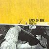

Celtic Lyrics Corner > Artists & Groups > Back Of The Moon > Fortune's Road > Laddie's Bedside
|  | Laddie's Bedside |
| Credits : | Traditional; arranged by Back Of The Moon |
| Appears On : | Fortune's Road |
| Language : | Scots-English |
| Other Versions : |
"
Begone Bonnie Laddie
" On Malinky's album
Handsel
|
Lyrics :
"Oh it's I am awa' tae my laddie's bedside
Oh I am awa' for tae be my laddie's guide
Oh I am awa' tae my laddie's bedside
Though his faither and mither, they'll be angry"
"Oh at my bedside, my lassie, ye'll no' sit
At my bedside, my lassie, ye'll no' sit
For it's I hae found a guide and a far better fit
So awa', lassie, wha cares for ye?"
"Well, ye micht a' courted yin, my love, ye micht a' courted seven
Ye micht a' courted eight, nine, ten and eleven
Ye can go and court another, that'll mak up the dozen
But be kind tae yer auld love for a' that"
"Oh come back, my bonnie lassie, dinna gang awa'
Oh come back, my bonnie lassie, dinna gang awa'
Oh come back, my bonnie lassie, dinna gang awa'
I was only in a jest for to try ye"
"Well, if ye were in a jest, my laddie, I wis nane
So lang, lang, my bonnie laddie, may ye lie yer lane
Oh lang, lang, my bonnie laddie, may ye lie yer lane
And think upon the bonnie lass that lou'ed ye
For the trees, they are high, my love, the leaves, they are green
The years are passing by, my love, that you and I hae seen
Through the lang winter's nicht when ye hae tae lie yer lane
Ach ye'll weary lang afore I come and see you"
For it's I am awa' tae my laddie's bedside
Oh I am awa' for tae be my laddie's guide
Oh I am awa' tae my laddie's bedside
Though his faither and mither, they'll be angry